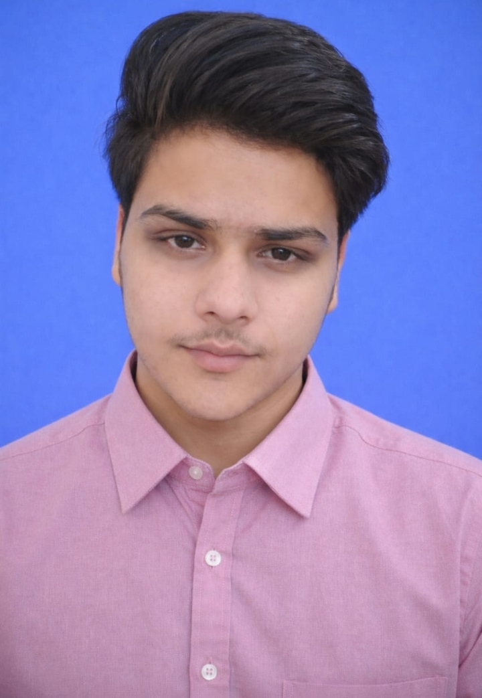

Bayesian reasoning
How should a belief change when new evidence arrives? I’m interested in using probability to make uncertainty more explicit in decision systems.
Inference · Uncertainty · DecisionsI’m Arpit Pareek, a school student from Shrimadhopur, Rajasthan. I learn by building small, independent projects at the intersection of AI, Bayesian reasoning, reinforcement learning, and human behaviour.
INDEPENDENT BUILDER · LEARN IN PUBLIC · CURRENTLY IN CLASS XII

01 / About
A current picture of where I am—not a claim that I have everything figured out.
I’m currently studying Physics, Chemistry, and Mathematics in Class XII in Rajasthan, India. Alongside school, I teach myself through code, documentation, experiments, and projects that help me make sense of a question.
My interests are converging around one theme: how people learn, make decisions, and respond to uncertainty—and whether computational ideas can help us understand those processes more clearly.
I’m still learning. I try to make that visible: describe what a project does, state its assumptions, and be clear about what it cannot prove. A working prototype is a starting point for investigation, not the end of it.
02 / Interests
These are areas I’m actively exploring through projects and self-directed learning—not labels of mastery.
How should a belief change when new evidence arrives? I’m interested in using probability to make uncertainty more explicit in decision systems.
Inference · Uncertainty · DecisionsReinforcement learning gives me a way to explore how an agent can improve through experience, mistakes, and feedback instead of a fixed route.
Q-learning · ExplorationI build student-centred experiments around learning, pressure, personal choices, and how technology might support reflection without replacing human judgement.
Cognitive models · Student support03 / Selected work
Independent builds and research-style explorations. Some are live demos; others are open-ended experiments with limitations stated honestly.
A student-focused reflection and decision-support companion. It aims to help people notice patterns, weigh trade-offs, explore opportunities, and consider a next step—without making the decision for them.
A self-reflection tool that combines repeated reports about study hours, sleep, stress, exam pressure, and felt support to estimate a low, moderate, or high cognitive-load state. It is a learning project—not a clinical or diagnostic tool.
An interactive grid where an agent learns to reach a goal through experience. The visual feedback makes it easier to follow how actions, mistakes, and rewards affect the route it learns.
A project exploring Bayesian inference for decision-making when outcomes are uncertain. It is an independent learning build inspired by research interests in decision systems, including Prof. Kenji Doya’s work.
An interactive exploration of India’s school journey from Class 1 to 12, including subject-stream choices, social expectations, and how exam systems can influence future decisions. Research models are distinguished from sourced figures.
An exploratory project asking whether traditional categories can be examined as recurring inner qualities and family patterns. The idea remains a hypothesis; it is not presented as established psychology or scientific proof.
A small web experiment exploring how a changing internal state—such as mood, stress, and focus—might be represented alongside decisions and a running memory log.
04 / Journey
A couple of public milestones that reflect the work so far.
Published a student-centred reflection and decision-support project, shaped by the belief that guidance should help people think—not make choices on their behalf.
A regional article covered my early AI and digital projects, including Brain 2.0, Vidya Yatra, 33 KOTI, and RL Visualiser.
05 / How I work
I want the work to be interesting—but also transparent about what it shows and what remains unknown.
Physics, mathematics, dance, and storytelling all give me different ways to think. I’m especially interested in technology that makes learning and opportunity feel more accessible to students who may not have a large ecosystem around them.
My next step is to keep improving the foundations—programming, mathematics, probability, and careful experimentation—while continuing to build.
06 / Contact
For thoughtful conversations about AI, student-centred technology, projects, or learning, reach out through the links here.